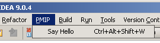
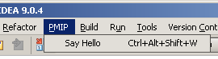
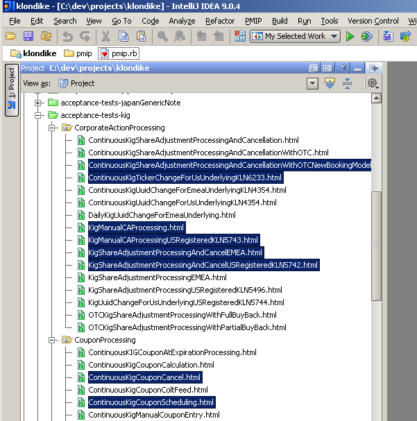
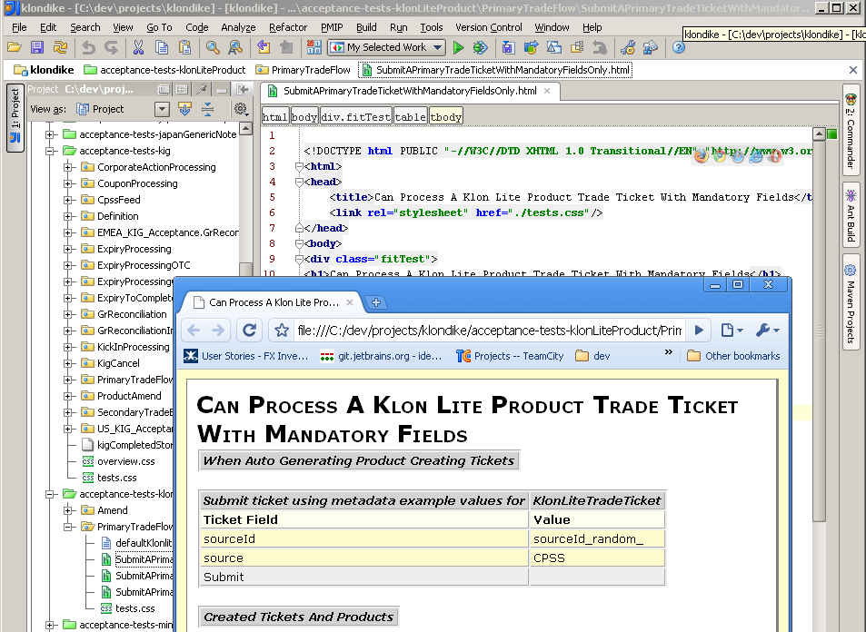
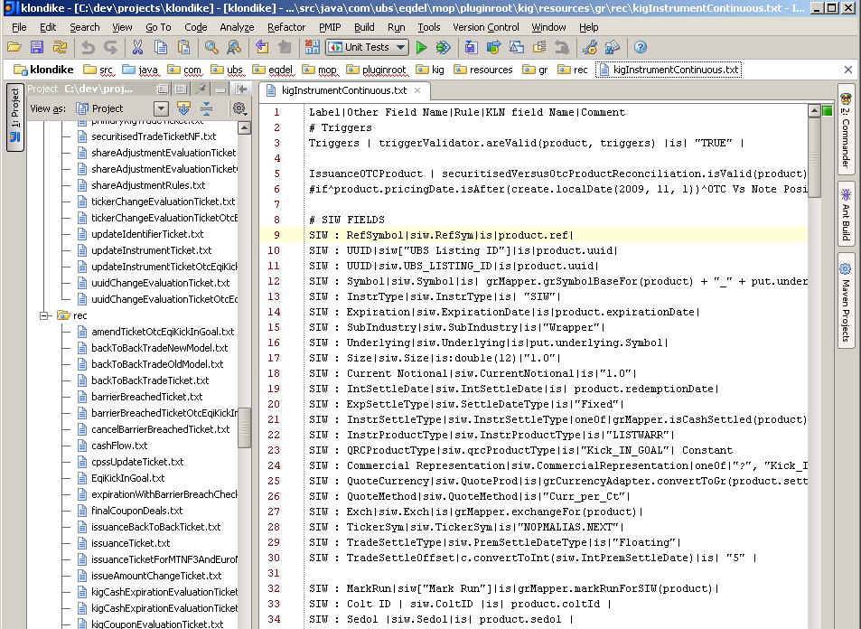
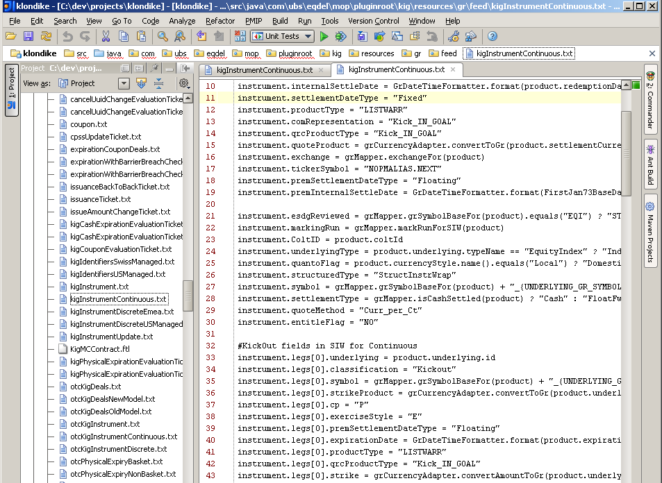
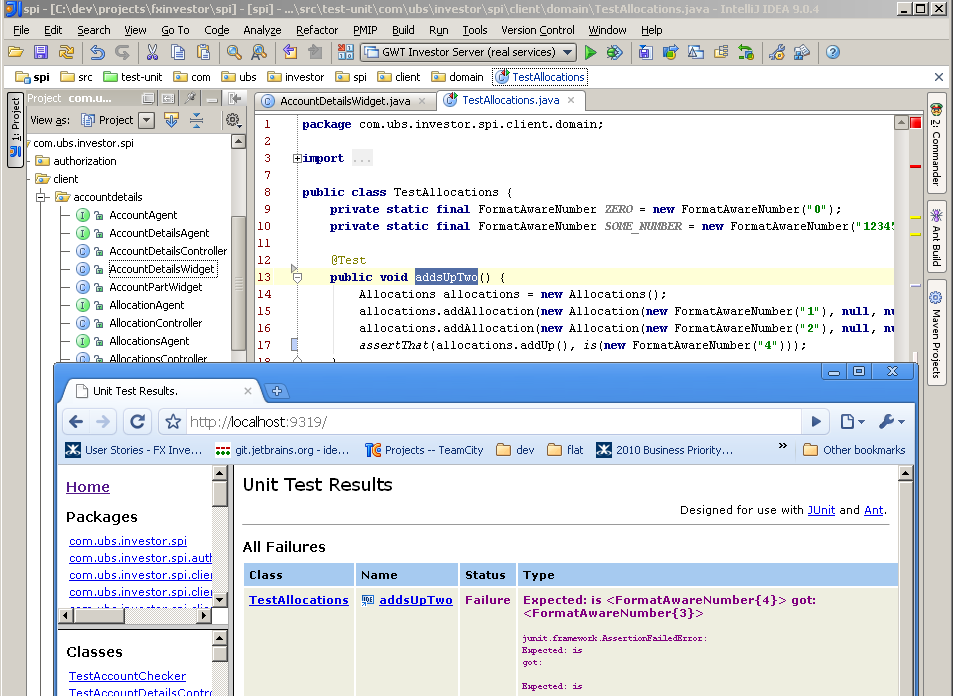
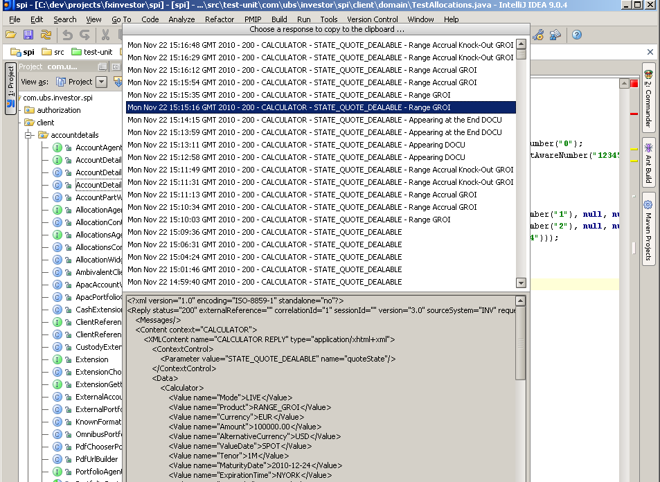
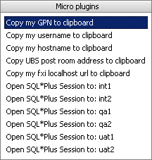

<idea-plugin url="@PROJECT.HOMEPAGE@">
<name>@PROJECT.TITLE@</name>
<description>@PROJECT.DESCRIPTION@</description>
<version>@PROJECT.VERSION@</version>
<change-notes>@PROJECT.CHANGENOTES@</change-notes>
<vendor email="@PROJECT.VENDOR.EMAIL@" url="@PROJECT.VENDOR.HOMEPAGE@">@PROJECT.VENDOR@</vendor>
<idea-version since-build="@IDEA.SINCE-BUILD@" until-build="@IDEA.UNTIL-BUILD@"/>
<project-components>
<component><implementation-class>org.codehaus.testdox.intellij.config.ConfigurationController</implementation-class></component>
<component><implementation-class>org.codehaus.testdox.intellij.TestDoxProjectComponent</implementation-class>
<option name="workspace" value="true"/>
<layout><window_info id="TestDox Plugin" active="false" anchor="bottom" auto_hide="false" internal_type="docked" type="docked" visible="true" weight="0.33"/></layout>
</component>
</project-components>
<application-components>
<component><implementation-class>org.codehaus.testdox.intellij.inspections.TestDoxInspectionProvider</implementation-class></component>
</application-components>
<actions>
<action id="TestDox::Toggle TestDox" class="org.codehaus.testdox.intellij.actions.ActivateTestDoxPanelAction"
text="Toggle TestDox" description="Shows/hides the TestDox panel for the current class">
<keyboard-shortcut first-keystroke="alt shift D" keymap="$default"/></action>
<action id="TestDox::Toggle QuickDox" class="org.codehaus.testdox.intellij.actions.ToggleQuickDoxAction"
text="Toggle QuickDox" description="Shows/hides quick TestDox for the current class">
<keyboard-shortcut first-keystroke="alt shift Q" keymap="$default"/></action>
<action id="TestDox::Close QuickDox" class="org.codehaus.testdox.intellij.actions.CloseQuickDoxAction"
text="Close QuickDox" description="Closes the TestDox tooltip">
<keyboard-shortcut first-keystroke="alt ESCAPE" keymap="$default"/></action>
<action id="TestDox::Toggle Class/Test" class="org.codehaus.testdox.intellij.actions.ToggleTestClassAction"
text="Toggle Class/Test" description="Switches back and forth between a class and its test class">
<keyboard-shortcut first-keystroke="alt shift T" keymap="$default"/></action>
<action id="TestDox::Add Test" class="org.codehaus.testdox.intellij.actions.AddTestAction"
text="New Test" description="Adds a test to the current test class">
<keyboard-shortcut first-keystroke="alt shift N" keymap="$default"/>
<add-to-group group-id="GenerateGroup" anchor="after" relative-to-action="GenerateEquals"/></action>
<action id="TestDox::Rename Test" class="org.codehaus.testdox.intellij.actions.RenameTestAction"
text="Rename Current Test" description="Renames the currently selected test method">
<keyboard-shortcut first-keystroke="alt shift F6" keymap="$default"/></action>
<action id="TestDox::Delete Test" class="org.codehaus.testdox.intellij.actions.DeleteTestAction"
text="Delete Current Test" description="Deletes the currently selected test method">
<keyboard-shortcut first-keystroke="alt shift DELETE" keymap="$default"/></action>
<group id="TestDox::PopupMenu" text="TestDo_x" popup="true">
<reference id="TestDox::Add Test"/>
<reference id="TestDox::Rename Test"/>
<reference id="TestDox::Delete Test"/>
<separator/>
<reference id="TestDox::Toggle Class/Test"/>
<reference id="TestDox::Toggle QuickDox"/>
<reference id="TestDox::Toggle TestDox"/>
<add-to-group group-id="MainMenu" anchor="after" relative-to-action="RefactoringMenu"/>
<add-to-group group-id="EditorPopupMenu" anchor="after" relative-to-action="RefactoringMenu"/>
</group>
</actions>
</idea-plugin>
import com.intellij.psi.PsiManager import com.intellij.ide.DataManager import com.intellij.execution.RunManager import com.intellij.psi.PsiDocumentManager import com.intellij.openapi.wm.WindowManager import com.intellij.openapi.keymap.KeymapManager import com.intellij.openapi.wm.ToolWindowManager import com.intellij.openapi.project.ProjectManager import com.intellij.openapi.vfs.VirtualFileManager import com.intellij.openapi.actionSystem.ActionManager import com.intellij.openapi.fileEditor.FileEditorManager import com.intellij.openapi.fileEditor.FileDocumentManager import com.intellij.openapi.application.ApplicationManager
class SayHelloAction < PMIPAction
def run(event, context)
Dialogs.new.info('Sample', 'Hello World!')
end
end
bind 'ctrl alt shift W', SayHelloAction.new
 








/pmip/plugins /pmip.rb
- separate download from googlecode
- extract zip to {project_home}/pmip/plugins/
plugin 'core'
Loading plugin core: - Version: x.x.x Ready to go ...
plugin 'hello'
plugins/hello/
/lib
/init.rb
class HelloWorldAction <PMIPAction defrun (event,context )Balloon .new.info('Hello from PMIP!') end end
bind HelloWorldAction.new
bind 'ctrl alt shift A', HelloWorldAction.new
bind'banana A' , HelloWorldAction.new
bind'pear A' , HelloWorldAction.new
load 'lib/goto_css.rb' bind 'banana G', GotoCss.new
class GotoCss < PMIPAction
def run(event, context)
line = context.current_editor.line
line =~ /.*"(.*?)".*/
css = $1
goto(css) unless css.nil?
end
end
def goto(css) files =Files .new.include('src/java/**/*.css') results =FindInFiles .new(files).pattern(/#{css}/, css) if results.empty?Balloon .new.info("could not find css: #{css}, delete it!") elseChooser .new("Goto css for: #{css}", results). description {|r| r.filepath }. preview_line {|r| r.content }. on_selected {|r|r.navigate_to.highlight_word }. show end end